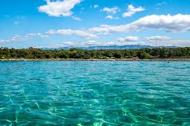
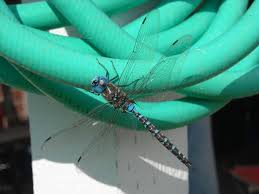

The ocean has several uses, but it is mainly used for entertainment during the summer time.

This dragonfly, although pretty, has traumatized me ever since I was a little girl minding my own business at the pool. A sunrise smoothie that looks amazingly beautiful and most likely tastes delicious.